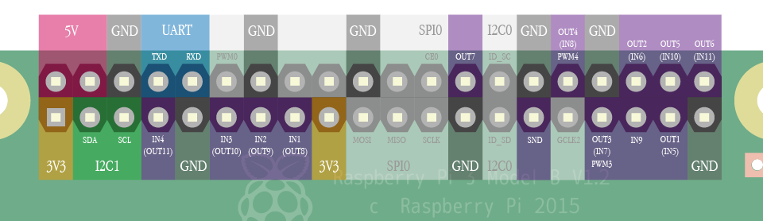

1. Terms of use
Agree to the Terms of use before use it. Distribution to third parties requires a contract.
2. Device compatibility
Basically, it should work with all models of Raspberry Pi.
Compatibility is confirmed with the following models.
- Raspberry Pi 3 Model B+
- Raspberry Pi 3 Model B V1.2
- Raspberry Pi Zero W V1.1
- Raspberry Pi Zero V1.3
- Raspberry Pi 2 Model B V1.2
- Raspberry Pi Model B+ V1.2
- Raspberry Pi Model A+ V1.1
* For some keyboards, The response of "Zero", "Zero W" and "Model A+" is not good for now.
However, Other than that, you can use those same as "Pi 3" and "Pi 2".
3. How to download
You can download it from here.
Installation
Using a PC, Format a microSD card with FAT16 or FAT32.
Copy contents of the directory including readme.txt to the microSD card.
- It's nice to prepare microSD card with capacity up to 32GB and use SD Memory Card Formatter.
- Supported file systems are FAT16 and FAT32.
- If it does not work properly, the compatibility between Raspberry Pi and the microSD card may not be good.
Please refer to [Working / Non-working SD cards] and try other cards.
Update
To update to the latest version, follow the procedure below.
* Since updating the SAVE and LOAD command specifications to support EEPROM with ver1.2.5, it may be necessary to adjust the file name in the "files" directory at the time of update. Please see "SAVE/LOAD Destination" for details.
- Using a PC, copy files in the microSD memory card to the desired location.(backup)
- Download and unpack the latest version of IchigoJam BASIC RPi from the download page.
- Overwrite the file on the microSD card with the file generated by downloading and unpacking it.
- Copy (restore) files directory, config.txt, keymap.txt from backup to microSD card.
4. How to use
Configure the default keyboard layout
To configure the default keyboard layout, edit keymap.txt in microSD card.
| Text in keymap.txt | Keyboard layout |
|---|---|
| us | US layout |
| jp | Japanese layout |
* Changing the keyboard layout after startup is also available by using KBD command.
(refer to the document below.)
Tutorial
I. Start IchigoJam BASIC

-
- Insert the microSD card into Raspberry Pi.
- Connect display device and keyboard.
- Connect USB cable to turn on the power.
If the screen looks like the one on the left, it's successful!
II. Turn on the LED

-
Input "LED1" from keyboard and press [Enter] key.
If the Activity LED (green one) on Raspberry Pi turned on,
it's successful!
III. Turn off the LED

-
Input "LED0" from keyboard and press [Enter] key.
If the Activity LED (green one) on Raspberry Pi turned off,
it's successful!
IV. Blinking LED

-
- Input "10 LED1: WAIT30" from keyboard and press [Enter] key.
- Input "20 LED0: WAIT30" from keyboard and press [Enter] key.
- Input "30 GOTO10" from keyboard and press [Enter] key.
- Input "RUN" from keyboard and press [Enter] key.
If the Activity LED (green one) on Raspberry Pi blinking,
it's successful!
To stop blinking, press [Esc] key.
5. Differences from the original edition
IchigoJam BASIC RPi is ported based on version 1.2.4(1.2b56)(*) of the original edition (LPC1114 edition).
The operation method and available commands are basically same as the original edition,
but the following points are different.
A Document of the original edition is here.
https://ichigojam.net/IchigoJam-en.html
* ver1.2.5 or later. Before ver1.2.4, ported based on ver1.2.3 of LPC1114 edition.
Unimplemented key operations
Following key operations are not implemented in RPi edition
| Key | Reaction of the original edition |
|---|---|
| [Ctrl] + [Shift] | Switching Kana input mode(same as [kana]) |
| [Ctrl] + [Alt] | Switching insert mode(same as [Insert]) |
Key operations specific for RPi edition
Following key operations are implemented in RPi edition only
| Key | Reaction of the RPi edition |
|---|---|
| [Ctrl] + [Shift] + [K] | Switching Kana input mode(same as [kana]) |
| [Ctrl] + [Alt] + [I] | Switching insert mode(same as [Insert]) |
Unimplemented commands
Following commands are not implemented in RPi edition
| Command | Reaction of the original edition | Reaction of the RPi edition |
|---|---|---|
| SWITCH | Change the Display | Do nothing |
| SLEEP | Enter to the system sleep mode | Do nothing |
| ANA | Return voltage of external input as a numerical value | Always returns 0 |
Commands specific for RPi edition
Following commands are implemented in RPi edition only(*1)
| Command | Reaction of the RPi edition | Usage |
|---|---|---|
| KBD | Change the keyboard layout(*2) |
KBD 0 'Swicthing To US KBD 1 'Swicthing To Japanese |
| IoT.IN |
Receive numerical values from sakura.io with I2C
|
?IoT.IN() 'Display received numerical value |
| IoT.OUT |
Send numerical value to sakura.io with I2C
|
IoT.OUT 111 'Send 111 |
*1 IoT.IN and IoT.OUT are implemented in LPC1114 edition in beta version.
*2 From ver1.2.5, the setting is saved in keymap.txt with the KBD command.
* The numerical value returned by LANG and the numerical value set by KBD are different.
LANG returns the language number of the font to be displayed when enabling Kana input with IchigoJam in use.
(LPC1114 edition 1:Japanese, 2:Mongolian, 3:Vietnamese)
SAVE/LOAD Destination
The save destination of the program by the SAVE, LOAD command is as follows.
With ver1.2.5, we changed the specification to support EEPROM.
When updating from ver1.2.4 or earlier to ver1.2.5 or later, adjust the file name in the "files" directory of the microSD card to take over the created program.
| microSD card(In the "files" directory) | EEPROM | |
|---|---|---|
| ver1.2.4 or earier | 0 to 3 and 100 to 227 (*.bin) | [Not supported] |
| ver1.2.5 or later | 0 to 99 (*.bin) | 100 to 227 |
Etc.
In addition, there are following differences.
- If power is turned on without connecting the keyboard, FILE0 is automatically executed (LRUN0)
- Only PWM3 and PWM4 can be used for PWM command
- IN3(OUT10) becomes a pull-up input with OUT10,-2 command
- LED command and OUT7 command are independent of each other
- Power saving mode of WAIT command is not supported
- With the FILES command without parameters, It behaves equivalent to FILES20 (ver1.2.5 or later)
- Clock down capability of VIDEO0 command is not supported (ver1.2.5 or later)
- USR command supports Thumb instruction set for Pi / Pi Zero series and Thumb 2 instruction set for Pi 2 / Pi 3 series (ver1.2.5 or later)
6. IO commands and physical pin layout
IN/OUT/PWM
The relationship between IN/OUT/PWM command and the physical pin
where the electric current actually flows is as follows.
| Physical pin | Input command | Output command | PWM command | Initial state |
|---|---|---|---|---|
| 15 | IN1 | (OUT8) | Input(pull up) | |
| 13 | IN2 | (OUT9) | Input(open) | |
| 11 | IN3 | (OUT10) | Input(open) | |
| 7 | IN4 | (OUT11) | Input(pull up) | |
| 35 | IN9 | Input(open,fixed) | ||
| 37 | (IN5) | OUT1 | Output | |
| 36 | (IN6) | OUT2 | Output | |
| 33 | (IN7) | OUT3 | PWM3 | Output |
| 32 | (IN8) | OUT4 | PWM4 | Output |
| 38 | (IN10) | OUT5 | Output | |
| 40 | (IN11) | OUT6 | Output | |
| 26 | OUT7 | Output(fixed) |
I2C
The physical pin where the electric signal actually flows
by using I2CW/I2CR command is as follows.
| Physical pin | function |
|---|---|
| 3 | SDA |
| 5 | SCL |
UART
The physical pin where the electric signal actually flows
when communicate using UART is as follows.
| Physical pin | function |
|---|---|
| 8 | TXD |
| 10 | RXD |
BEEP/PLAY
The physical pin where the electric signal actually flows
by using BEEP/PLAY command is as follows.
| Physical pin | function |
|---|---|
| 29 | SND |
Pinout
{kind=link}
7. Known issues and planned actions
Known issues
- [issue 1005] For some keyboards, The response of "Zero", "Zero W" and "Model A+" is not good.
- [issue 1008] I2CW returns zero (success), in situations where non-zero (failure) should be returned, such as access to a nonexistent address.
Planned actions
- Improvement of key input processing. (related to issue 1005)
Fixed Issues
- [issue 1009] LED command does not work on Raspberry Pi 3 Model B+.
- [issue 1007] The cursor does not blink.
- [issue 1006] The value of TICK and the number of screen refreshes are not synchronized.
- [issue 1004] Screen changes by CLS, SCROLL, POKE, COPY, CLP are not reflected until the next PRINT processing.
- [issue 1003] Auto repeat does not work on some keyboards.
- [issue 1002] Shift, Ctrl, Alt do not work on some keyboards.
- [issue 1001] Home, End, Page Up, Page Down, Ins on the Numeric Keypad do not work on some keyboards.
Change log
- [2018/06/08] ver1.2.6
-
- [issue 1009] has been fixed
- [2018/06/01] ver1.2.5
-
- sakura.io was supported(IoT.IN, IoT.OUT command)
- A display related function was supported(VIDEO command)
- Sound related functions were supported(BEEP, PLAY, TEMPO, SOUND command)
- A machine language related function was supported(USR command)
- EEPROM was supported, the save destination of the program was changed(SAVE, LOAD command)
- Behavior of FILES command without parameters was changed(From FILES 3 equivalent to FILES 20 equivalent)
- Behavior of KBD command was changed to save setting in keymap.txt
- Font anti-aliasing was disabled(scaling_kernel = 8 added to config.txt)
- Specification changes in 1.2.4(1.2b56) of LPC1114 edition were incorporated
- Behavior of FILES0,0 was changed to display only file 0
- A command for suppression of error message was changed from OK0 to OK2
- It was changed to completely ignore spaces between commands
- Now, It can be set the communication speed of I2C using the second parameter of the BPS command ex)BPS0,100 'Set to 100kHz
- Switching of kana input mode by [Right Alt] + [K] was removed
- [Right Alt] was changed to work the same way as [Left Alt]
- [Alt] + [W] was changed to work the same way as [Alt] + [0]
- [Alt] + [X] was changed to work the same way as [Alt] + [1]
- [Alt] + [Y] was changed to work the same way as [Alt] + [2]
- [Alt] + [Z] was changed to work the same way as [Alt] + [3]
- [2018/04/24] ver1.2.4.fw-5db8e4e
-
- Firmware has been updated to the version compatible with Raspberry Pi 3 Model B +
- [2017/12/25] ver1.2.4
-
- [issue 1007] has been fixed
- [issue 1006] has been fixed
- Screen rendering processing has been improved.(related to issue 1006, 1007)
- [2017/12/09] ver1.2.3
-
- [issue 1004] has been fixed
- ver1.2.2
-
- [issue 1003] has been fixed
- [issue 1002] has been fixed
- [issue 1001] has been fixed
8. FAQ
- Q. The screen flips vertically, when using "Raspberry Pi 7 inch Touchscreen Display".
- A. It can be adjusted by adding lcd_rotate=2 to config.txt as with Raspbian.
- Q. There is no button on the raspberry pi, how to start the program automatically when turn on the power?
- A. If power is turned on without connecting the keyboard, FILE0 is automatically executed (LRUN0).
- Q. Can Composite Video (RCA terminal) be used for display output?
- A. Yes. Similar to Raspbian, a signal is output from the 3.5 mm jack. The sound is output from the physical PIN 29 (SND).
- Q. I want to use a Japanese keyboard.
- A. You can switch it with the KBD command. Try KBD1.
- Q. I want to use a US keyboard.
- A. You can switch it with the KBD command. Try KBD0.
- Q. Does it support analog input?
- A. No. Use external modules such as AD Converter connecting via I2C and so on.
9. Support
For inquiries, please contact below.
Natural Style Co. Ltd.
IchigoJam BASIC RPi Team
(support@na-s.jp)
Also, for technical information sharing and questions, please use the following Facebook group.
https://www.facebook.com/groups/ichigojamfan/